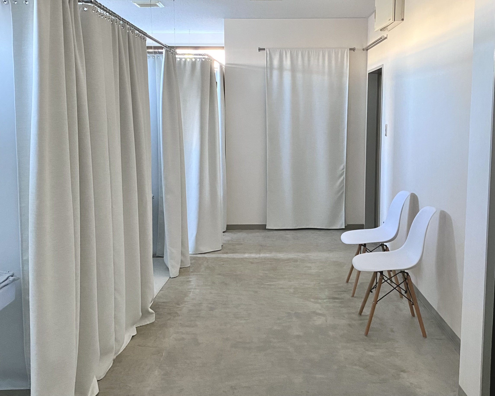
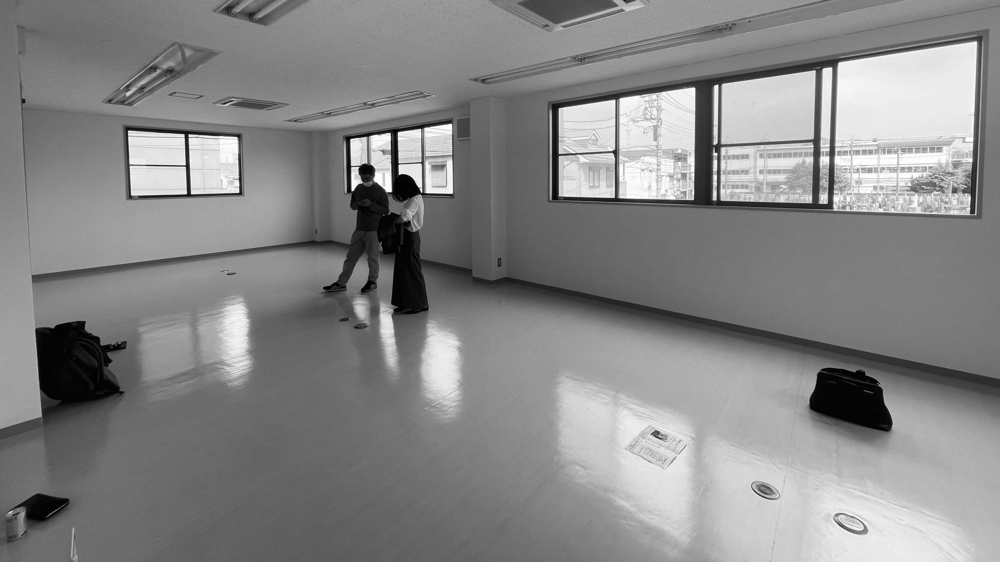
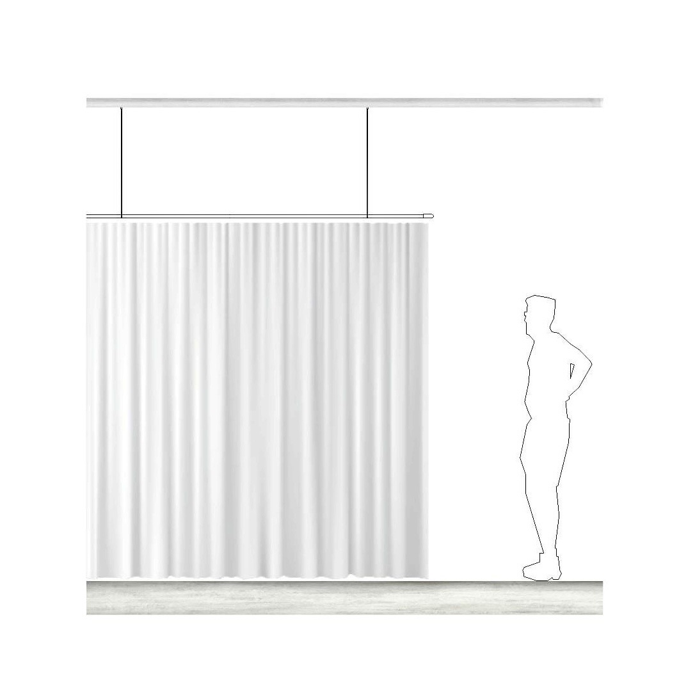
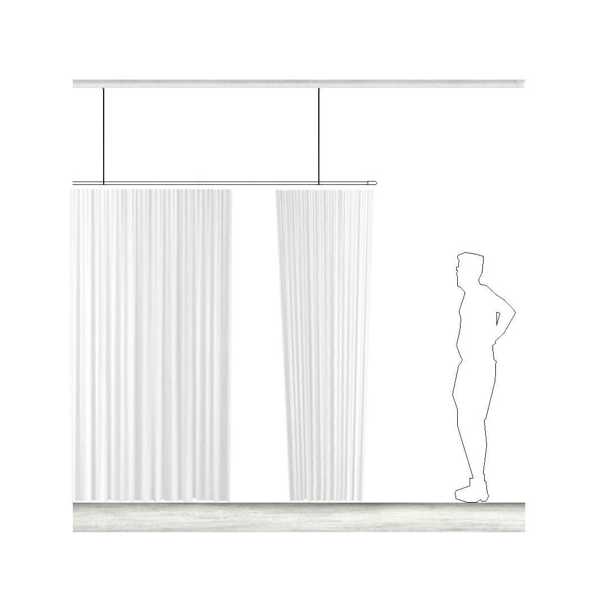
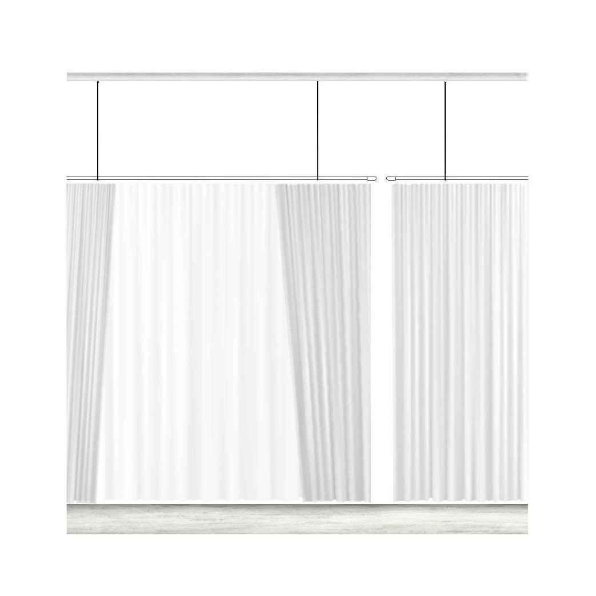
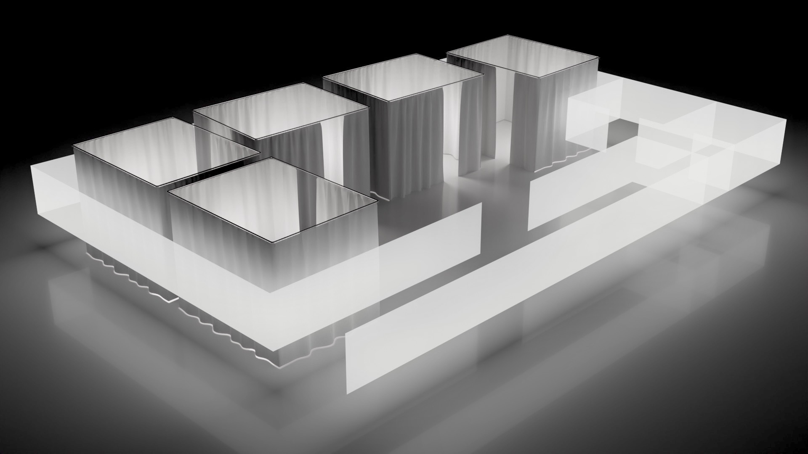
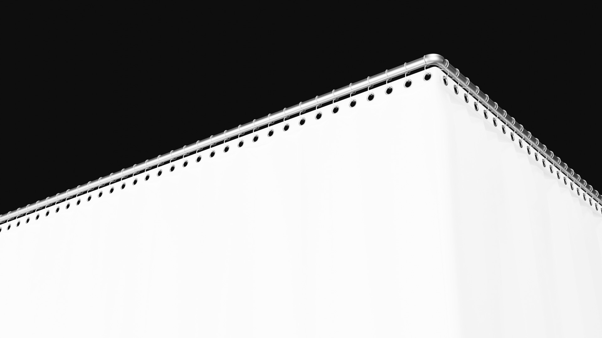
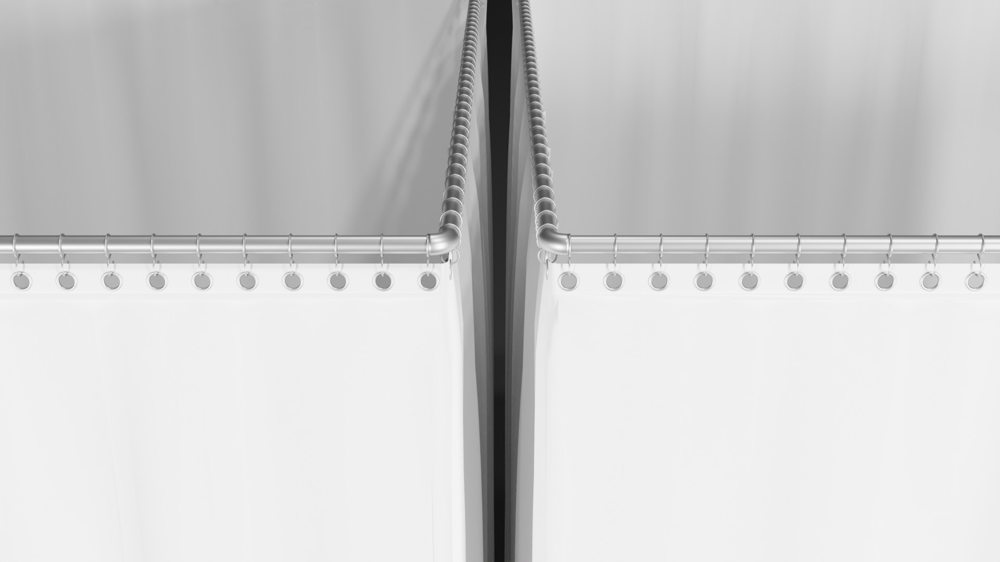

CLIENTWORK

空間設計 / Blender
大宮-ホワイトニングサロン
大学在学中、同期とともに内装設計の仕事として取り組んだ案件。材料選定、現地調査、設計から施工まで一連の工程を経験。
どのような空間が適切か、クライアントの要望を交えながら形にした。

天井と壁の施工は許可が下りず、床のみタイルをはがし研磨と塗装を行った。

パーテーションの支えを安定させるため、天井裏の構造を補強し設置を行った。



空間の圧迫感をなくすために天井から吊るす形で設置し、両開きのカーテンのようなパーテーションを設計。

店舗の窓から墓地が見える立地だったため、導線を入り口がハブになるように設計。

消防法をクリアするため生地から特注でカーテンを製作。

病室のような見た目を避けるため、ステンレスフレームとカーテン間にハトメで軽さと抜けを演出。
NEXT